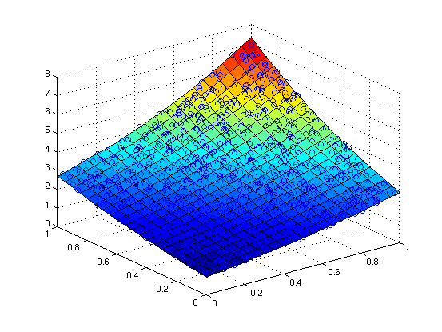
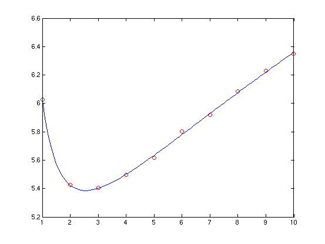

Contents
Fit a 1-d model to cos(x). We only need the even order terms.
x = -2:.1:2;
y = cos(x);
p = polyfitn(x,y,'constant x^2 x^4 x^6')
if exist('sympoly') == 2
polyn2sympoly(p)
end
if exist('sym') == 2
polyn2sym(p)
end
polyvaln(p,[0 .5 1])
p =
ModelTerms: [4x1 double]
Coefficients: [0.99996 -0.49968 0.041242 -0.0012079]
ParameterVar: [1.2876e-10 1.084e-09 4.6603e-10 1.3903e-11]
ParameterStd: [1.1347e-05 3.2925e-05 2.1588e-05 3.7286e-06]
R2: 1
RMSE: 3.1468e-05
VarNames: {'x'}
A scalar sympoly object
0.99996 - 0.49968*x^2 + 0.041242*x^4 - 0.0012079*x^6
ans =
0.99996
0.8776
0.54031
A surface model in 2-d, with all terms up to third order.
n = 1000;
x = rand(n,2);
y = exp(sum(x,2)) + randn(n,1)/100;
p = polyfitn(x,y,3)
if exist('sympoly') == 2
polyn2sympoly(p)
end
if exist('sym') == 2
polyn2sym(p)
end
[xg,yg]=meshgrid(0:.05:1);
zg = polyvaln(p,[xg(:),yg(:)]);
surf(xg,yg,reshape(zg,size(xg)))
hold on
plot3(x(:,1),x(:,2),y,'o')
hold off
p =
ModelTerms: [10x2 double]
Coefficients: [1x10 double]
ParameterVar: [1x10 double]
ParameterStd: [1x10 double]
R2: 0.99992
RMSE: 0.011198
VarNames: {}
A scalar sympoly object
0.50402*X1^3 + 1.3927*X1^2*X2 - 0.017552*X1^2 + 1.3798*X1*X2^2 + 0.081473*X1*X2 + 1.2726*X1 + 0.43959*X2^3 + 0.087656*X2^2 + 1.2254*X2 + 0.96196
 A linear model, but with no constant term, in 2-d
uv = rand(100,2);
w = sin(sum(uv,2));
p = polyfitn(uv,w,'u, v');
if exist('sympoly') == 2
polyn2sympoly(p)
end
if exist('sym') == 2
polyn2sym(p)
end
A scalar sympoly object
0.76416*u + 0.70472*v
A model with various exponents, not all positive integers.
x = 1:10;
y = 3 + 2./x + sqrt(x) + randn(size(x))/100;
p = polyfitn(x,y,'constant x^-1 x^0.5');
if exist('sympoly') == 2
polyn2sympoly(p)
end
if exist('sym') == 2
polyn2sym(p)
end
xi = 1:.1:10;
yi = polyvaln(p,xi);
plot(x,y,'ro',xi,yi,'b-')
A scalar sympoly object
2.9805 + 2.0448*x^-1 + 1.0041*x^0.5
